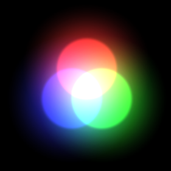
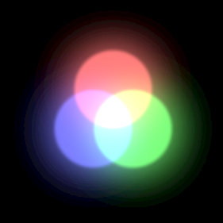

オプション¶
概要¶
グリッドや背景といったエディタの表示に関するオプションを設定します。
パラメーター¶
グリッド色¶
グリッドの色を指定します。
グリッドの表示¶
グリッドを表示するかどうか指定します。
XYグリッドの表示¶
XY平面のグリッドを表示するか指定します。
XZグリッドの表示¶
XZ平面のグリッドを表示するか指定します。
YZグリッドの表示¶
YZ平面のグリッドを表示するか指定します。
グリッドサイズ¶
グリッドの大きさを指定します。
ライト方向¶
モデルを表示した時にモデルを照らすライトの方向を指定します。
ライト色¶
ライトの色を指定します。
アンビエント色¶
環境光の色を指定します。
出力時の拡大率¶
エフェクトファイルを外部に出力する際の拡大率を変更した時の拡大を再現するパラメーターです。 このパラメーターを設定するとエフェクトを拡大して表示します。
出力FPS¶
外部でFPSを変更してエフェクトを再生した時の表示を再現するパラメーターです。 このパラメーターを設定するとFPSを変更して表示します。
座標系¶
外部で座標系を変更してエフェクトを再生した時の表示を再現するパラメーターです。 このパラメーターを設定すると座標系を変更して表示します。
カラースペース¶
外部でカラースペースを変更してエフェクトを再生した時の表示を再現するパラメーターです。 カラースペースにはガンマスペースとリニアスペースがあります。
ガンマスペース¶

リニアスペース¶

Unity等、最近のゲームエンジンではカラースペースを変更できます。使用する先のカラースペースに合わせて設定します。 カラースペース自体の意味は各ゲームエンジン等の説明を確認してください。 Effekseerのカラースペースはデフォルトではガンマスペースです。
マウスマッピング¶
マウスによる視点の操作方法を指定します。 Effekseer、Maya、Unity、Blenderに近い選択肢があります。
マウスの回転方向(X)¶
マウスの回転方向を指定します。
マウスの回転方向(Y)¶
マウスの回転方向を指定します。
マウスのスライド方向(X)¶
マウスのスライド方向を指定します。
マウスのスライド方向(Y)¶
マウスのスライド方向を指定します。
フォント¶
フォントの種類を指定します。
フォントサイズ¶
フォントの大きさを指定します。